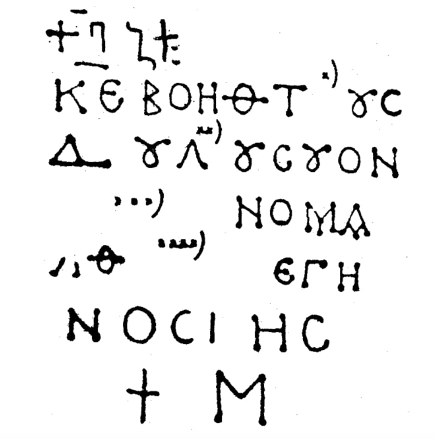

ატენის სიონის წარწერა
შინაარსი / Summary
სავედრებელი
ბიბლიოგრაფია Bibliography
კრიტიკული გამოცემა Interpretive Edition
ΚΕ ΒΟΗΘΤΟΥC ΔΟΥΛΟΥCΟΥΟΝ ...ΝΟΜΑ ...ΑΘ... ΕΓΗ ΝΟCΚΗ †Μ Κ[ύρι]ε βοήθ[ει] τοὺς | δούλου[ς] σου | ὧν [τὰ ὀ]νόμα[τα] | ...αθ [κύρι]ε γι | νώσκεις | †Μ
κ(ύρι)ε βοήθ(ει) τ οὺς
δ ούλ ου ς σ ου
ὧ ον τὰ ὀνόμα τα
...αθ ε γ ι η-
5ν ώ οσ κ ει ης
✝ Μ
დიპლომატიური გამოცემა Diplomatic Edition
ΚΕΒΟΗΘΤΟΥCΔΟΥΛΟΥCΟΥΟΝΝΟΜΑΑΘΕΓΗΝΟCΚΗ†ΜΚ[ΥΡΙ]ΕΒΟΗΘ[ΕΙ]ΤΟΥΣ|ΔΟΥΛΟΥ[Σ]ΣΟΥ|ΩΝ[ΤΑΟ]ΝΟΜΑ[ΤΑ]|ΑΘ[ΚΥΡΙ]ΕΓΙ|ΝΩΣΚΕΙΣ|†Μ
ΚΕ ΒΟΗΘ Τ ΟΥΣ
Δ ΟΥΛ ΟΥ Σ Σ ΟΥ
Ω ΟΝ ΤΑ ΟΝΟΜΑ ΤΑ
ΑΘ Ε Γ Ι Η
5Ν Ω ΟΣ Κ ΕΙ ΗΣ
✝ Μ

Ateni Sioni
{'ka': 'უფალო, შეეწიე მონათა შენთა, რომელთა სახელებია... უფალო შენ უწყი (ყოველი?)'}
{'default': 'დათარიღების საფუძველია ასოთა მოხაზულობა (კუთხეებში ჩაღრმავებები, ნაკლებ მომრგვალებული σ და ε, აბსოლუტურად მრგვალი ο, α ჩატეხილი შუა ხაზით, μ გრძელი\n შუა ხაზით, სისტემატიურად ლიგატურა ου-ს ხმარება) და ენობრივი მონაცემები (შემოკლებანი, იტაციზმი (γηνοσκης), ο და ω-ს აღრევა (ον? და γηνοσκης), ორი\n მეზობელი σ-დან ერთის ამოვარდნა). ასოთა მოხაზულობის თვალსაზრისით მას უჭირავს საშუალო ადგილი ვაშნარისა და ახალი ათონის ბერძნულ წარწერებს შორის.\n არის საინტერესო შემოკლება: βοηθ. ატენის ტაძრის ბერძნული წარწერის შესახებ ლიტერატურაში არის ასეთი ცნობა: Dubois de Montpéreux, Voyage... v. III, p.214-215 (1839) წერს: "Une inscription\n grecque porte une date, cette date est exprimée par un M, mille, qui est a peu près celle de la mort de Bagrat II:, Муравьев; Грузия и Армения, III, 105\n ფასადის შესახებ წერს: "... здесь имеются надписи на гречкском и армянском языках"; Бакрадзе, Кавказ... 37 ემოწმება ამ ცნობას. უფრო დაწვრილებით წერს: Brosset,\n Rspports, IV, 24: J\'ai copié restes d\'une inscription grecque dont M Dubois avait fait une copie toute semblable à la mienne: ΚΕ Β ΗΘΤΟΥC | Δ... ΟΥCΟΝ |\n ...ΟΥΝΜΑ | ΑΘ ΚΕΓΗ | ΝΟCΚΗC | +Ν. პომიალოვსკის (Сборник греческихъ и латинскихъ надписей, 59-60) მოჰყავს ყველა ეს ცნობა და უმატებს (უშუალოდ ბროსეს ცნობას):\n "Вероятно это таже надпись, которую имел в виду Дюбуа... В ней можно разорвать; κ(ύρι)ε, β[ο]ήθ[ει] τους δ[ούλ]ους σου [ὧ]ν?... ὀν[ό]μα[τ]α?... κ(ύρι)ε\n γινώσκεις"... წარწერის I სტრიქონზე ადგილია, მაგრამ არ ჩანს, რომ ასო ყოფილიყოს; II სტრიქონზე საკმარისად დიდი ადგილია, მაგრამ მოჩანს მხოლოდ მკრთალად დაზიანებული ΟΥΛ;\n III სტრიქონზე დიდი ადგილი სულ ამონგრეულია; IV სტრიქონზე შესაძლებელია იყო ერთი მოკლე სახელი (მონათაგან - ერთისა).'}
<div type="edition" xml:lang="ka" ana="mtavruli" xml:space="preserve">
<ab>
<lb n="1"/><w lemma="ქრისტე"><expan><abbr>ქ</abbr><ex>რისტ</ex><abbr>ე</abbr></expan></w>
<w lemma="განსუენება"><expan><abbr>გა</abbr><ex>ნ</ex><abbr>ო</abbr><ex>ჳ</ex><abbr>ს</abbr><ex>უ</ex><abbr>ენე</abbr></expan></w>
<w lemma="სულ">სოჳ<lb n="2" break="no"/>ლსა</w>
<name nymRef="ვაჩა">ვაჩაჲს<lb n="3" break="no"/>ასა</name>
<name nymRef="გურა"><expan><abbr>გო</abbr><ex>ჳ</ex><abbr>რაჲ<lb n="4" break="no"/>სასა</abbr></expan></name>
<name nymRef="მირა"><expan><abbr>მ</abbr><ex>ი</ex><abbr>რა</abbr><ex>ჲ</ex><abbr>ს</abbr><ex>ა</ex><abbr>ს</abbr><ex>ა</ex></expan></name>
</ab>
</div>